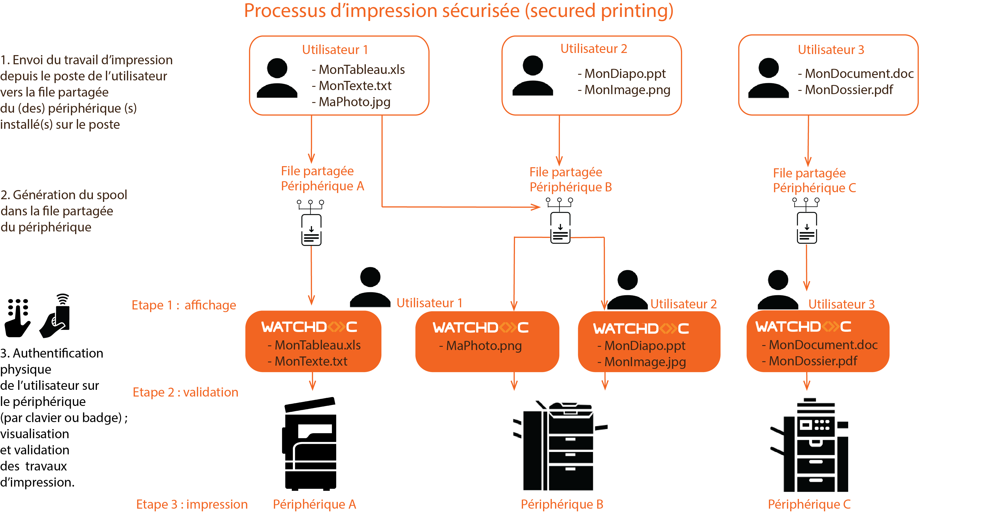
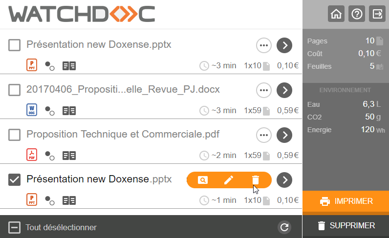
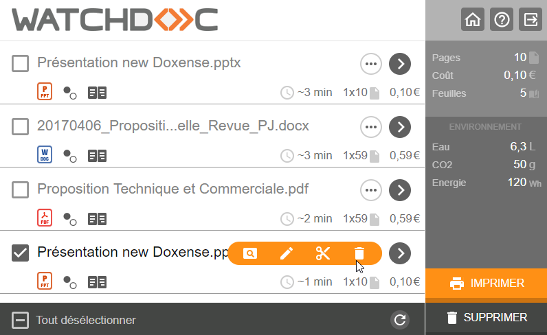
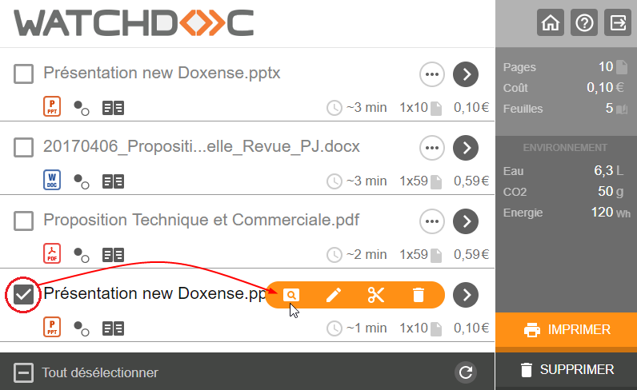
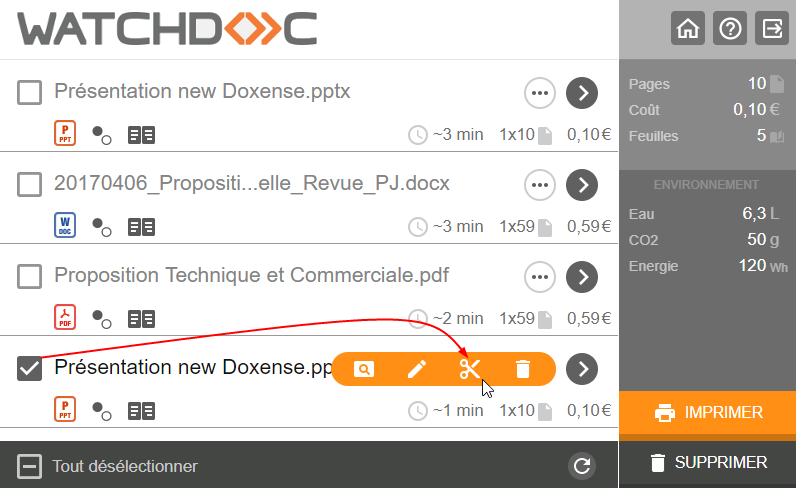
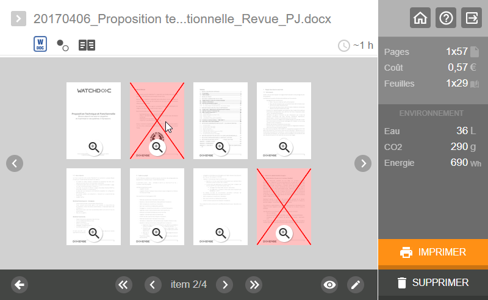

Lorsque le WES est activé, les travaux d'impression sont en attente sur le serveur jusqu'à ce qu'un utilisateur s'authentifie sur un périphérique d'impression et les valide. Les travaux sont alors imprimés via la file d'impression.
Deux modes de déblocage des impressions sont possibles :
-
l'impression sécurisée (secured printing) ;
-
l'impression à la demande (pull printing).
Impression sécurisée
Ce mode permet de bloquer tous les documents dans la file d’impression partagée du périphérique. Cette file est configurée sur le poste de l'utilisateur. L’utilisateur ne peut donc débloquer ses impressions que sur ce seul périphérique après s'y être authentifié.
Pour ce type de configuration, les files d'impression doivent être déployées sur les ordinateurs de chaque utilisateur et l'utilisateur doit choisir, parmi les périphériques configurés sur son poste, celui sur lequel il souhaite lancer ses travaux d'impression :

Impression à la demande
Ce mode permet de rediriger les travaux d'une file logique vers une file physique dont les formats de spools sont compatibles.
Grâce à cette fonction, il est possible de définir une file logique (ou plusieurs, l'une pour l'impression monochrome et l'autre pour l'impression couleur ; l'une pour le bac par défaut et l'autre pour le bac de papier à en-tête, par exemple). Installée sur l'ordinateur de l'usager, cette file logique permet à l'usager de débloquer ses impressions sur le périphérique de son choix (parmi les files physiques vers lesquelles la file logique peut rediriger les travaux).
Si vous activez la fonction Impression à la demande, vous aurez besoin d'une (ou de plusieurs) files supplémentaires dans votre licence Watchdoc® (licences FIR) :
Validation des travaux d'impression
-
Après son authentification sur l'écran du périphérique, l’utilisateur est dirigé vers l’écran d’accueil standard qui affiche toutes les applications, dont l’application de libération des travaux Watchdoc® :

Liste des travaux d'impression sans la fonction de suppression
Liste des travaux d'impression avec la fonction de suppression
-
Dans la liste, l’utilisateur sélectionne les documents qu’il souhaite imprimer ou supprimer*.
Par défaut, tous les documents sont sélectionnés.
-
L’utilisateur peut libérer tous ses travaux en 2 clics : pour lancer l’application, puis pour le bouton Tout imprimer.
-
Dans la dernière colonne, il est possible de choisir l’affichage du coût, du prix ou le nombre de feuilles de chaque document.
Consultation détaillée des travaux d'impression
Il est possible d'obtenir plus d’informations sur un travail en cliquant sur le bouton d'accès aux outils, puis en cliquant sur l'outil zoom :

Visualisation détaillée des travaux
Suppression des pages superflues*
L' interface dispose d'un outil de suppression permettant à l'utilisateur de supprimer des pages d'un document de sorte qu'elles ne soient pas imprimées :
-
l'utilisateur clique sur le bouton d'accès aux outils
-
il accède à la barre des outils
-
s'ils s'y trouvent, il clique sur les ciseaux :

-
Il accède au détail du document.
-
Il clique sur les pages qu'il ne souhaite pas imprimer : les pages supprimées sont barrées en rouge.
-
L'utilisateur peut alors cliquez sur Imprimer pour n'imprimer que les pages souhaitées :

(* la fonction de suppression est supportée par la plupart des WES, mais pas par tous. Il convient de vérifier la compatibilité de la fonction avec les périphériques installés.)